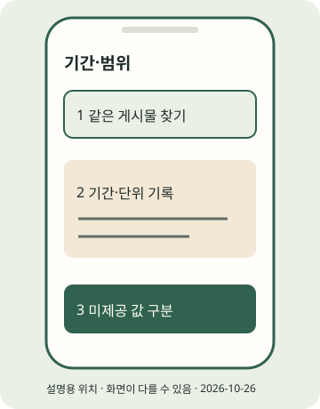

(실습) 실습편 / 10
(실습) 10. 첫 24시간·7일 지표
같은 게시물의 범위와 지표를 두 시점에 기록한다.
2026년 10월 조사 기준 · 확인일 2026-10-26 · 근거: PRAC-24 · E2E 한눈에 보기
진행 기록은 자바스크립트를 켜면 이 브라우저에 저장합니다.
이 실습의 흐름

STEP 01 · 같은 게시물의 인사이트 열기
같은 게시물의 인사이트 열기
지금 하는 일
게시물 주소와 관찰 범위를 확인합니다.
왜 하는지
다른 기간·다른 게시물의 수치를 섞지 않기 위해서입니다.
따라 하기
- 실습 7에서 기록한 게시물 주소와 계정·포맷·게시 시각을 확인합니다.
- 아래 후보로 해당 게시물의 인사이트를 찾습니다. 계정 합계와 단일 게시물을 구분하고 날짜 필터·단위를 적습니다.
- 첫 24시간·7일은 교재의 관찰 시점입니다. Instagram이 정한 성공 판정 기한이 아닙니다.
이렇게 보이면 성공
관찰한 게시물 주소·계정·기간·포맷과 화면의 단위가 기록됐습니다.
이렇게 보이면?
- 화면을 못 찾으면 공식 도움말에서 기능을 확인하고 완료로 표시하지 마세요.
- 프로페셔널 전환 전 데이터의 앱 보존 범위를 임의로 가정하지 마세요.
Windows
이 단계는 Windows와 무관한 휴대폰 또는 웹 작업입니다. 휴대폰 OS와 앱 버전의 화면 차이는 공식 도움말로 확인하세요.macOS
이 단계는 macOS와 무관한 휴대폰 또는 웹 작업입니다. 휴대폰 OS와 앱 버전의 화면 차이는 공식 도움말로 확인하세요.STEP 02 · 표시된 값과 미제공을 구분
표시된 값과 미제공을 구분
지금 하는 일
조회·도달·저장·공유와 시청시간을 그대로 기록합니다.
왜 하는지
서로 다른 지표를 같은 사람 수나 성공 점수로 읽지 않습니다.
따라 하기
- 조회는 반복 표시/재생을 포함할 수 있고 도달은 고유 계정 추산입니다. 저장·공유도 모두 고유 사람 수라고 해석하지 않습니다.
- 유료/자연, Instagram/Facebook 합산, 계정/게시물, 기간을 함께 적고 화면의 단위를 보존합니다. 릴스 시청시간은 화면이 제공할 때 기록합니다.
- 값이 없으면 미제공으로 씁니다. 0으로 채우지 않습니다. 평균 시청시간을 조회로 임의 나누어 만들지 않습니다.
게시물 주소 / 계정 / 포맷 / 게시 시각:
관찰 시각 / 집계 기간 / 범위:
조회 / 도달 / 저장 / 공유:
릴스 시청시간 / 화면 단위:
유료·자연 / IG·FB 합산 여부:
미제공 항목 / 확인할 조건:이렇게 보이면 성공
숫자 옆에 범위·기간·단위가 있고 없는 값은 미제공으로 남겼습니다.
이렇게 보이면?
- 빈 값은 계정 유형·지원 지표·전환 시점·집계 지연을 확인할 항목으로 남기세요.
- 조회 0이나 저장 0만으로 제재를 단정하지 마세요.
Windows
이 단계는 Windows와 무관한 휴대폰 또는 웹 작업입니다. 휴대폰 OS와 앱 버전의 화면 차이는 공식 도움말로 확인하세요.macOS
이 단계는 macOS와 무관한 휴대폰 또는 웹 작업입니다. 휴대폰 OS와 앱 버전의 화면 차이는 공식 도움말로 확인하세요.STEP 03 · 다음 한 편에서 바꿀 것 하나
다음 한 편에서 바꿀 것 하나
지금 하는 일
두 관찰 시점의 기록으로 다음 수정점을 정합니다.
왜 하는지
한 게시물의 숫자를 수익 예측이나 성장 보장으로 바꾸지 않습니다.
따라 하기
- 첫 24시간과 7일에 같은 기록 양식을 씁니다. 비교 가능한 범위인지 먼저 확인합니다.
- 이론 11장 지표 읽기에서 해석을 확인하고 제목·표지·설명 방식 중 다음에 바꿀 것 하나를 적습니다.
- 이론 14장 계획에 실제 제작·검수 시간을 반영합니다. 고정 성장 기준·수익 예측 수치는 추가하지 않습니다.
이렇게 보이면 성공
두 시점의 관찰 기록과 다음 한 편에서 바꿀 점 하나가 있습니다.
이렇게 보이면?
- 표본이 작으면 원인을 확정하지 말고 관찰을 더 모으세요.
- 조회만 높아도 실제 수입·비용과는 별도로 기록하세요.
Windows
이 단계는 Windows와 무관한 휴대폰 또는 웹 작업입니다. 휴대폰 OS와 앱 버전의 화면 차이는 공식 도움말로 확인하세요.macOS
이 단계는 macOS와 무관한 휴대폰 또는 웹 작업입니다. 휴대폰 OS와 앱 버전의 화면 차이는 공식 도움말로 확인하세요.지금 내 손에 있는 것
같은 게시물의 범위와 지표를 두 시점에 기록한다. 아래 단계 확인을 모두 마쳤는지 E2E에서 다시 봅니다. 선택하지 않은 포맷·심화는 미완료로 남겨도 됩니다.